16. Model vyhľadávania a trh práce#
Táto časť sa zaoberá správaním na trhu práce. V časti Statický model všeobecnej rovnováhy sme v statickom modeli ukázali, ako práca reaguje na šoky v celkovej produktivite faktorov a vo fiškálnej politike.
Ak by sme predpokladali, že všetka nezamestnanosť v ekonomike je dobrovoľná, jej zmeny by sme mohli interpretovať ako výsledok rozhodovania spotrebiteľov medzi prácou a voľným časom. Pokles zamestnanosti by potom znamenal, že spotrebitelia pracujú menej a časť svojho času venujú voľnému času namiesto práce.
Realita je komplexnejšia. Existuje aj nedobrovoľná nezamestnanosť, ktorá vyplýva z nedokonalého párovania pracovníkov a voľných pracovných miest, ako aj z rozdielov medzi kvalifikačnou štruktúrou ponuky práce a dopytu po práci.
Na podrobnejšie vysvetlenie fungovania trhu práce preto v tejto časti predstavíme model vyhľadávania. Pomocou neho vysvetlíme, akými faktormi sa riadia zamestnanosť a nezamestnanosť, miera voľných pracovných miest a miera zapojenia na trhu práce.
Najskôr však definujeme potrebné ukazovatele a predstavíme priebeh ich časových radov v slovenskej ekonomike. Na konci tejto časti preveríme, do akej miery dokáže teoretický model vysvetliť pozorované vlastnosti slovenského trhu práce.
16.1. Základné definície a pojmy#
- Pracovná sila
Pracovná sila je súčet zamestnaných a nezamestnaných osôb.
Pracovná sila sa v odbornej literatúre označuje aj ako ekonomicky aktívne obyvateľstvo. Ekonomicky aktívni jedinci sú zapojení na trhu práce. Znamená to, že pracujú alebo sú nezamestnaní a aktívne si hľadajú prácu. Jedinci, ktorí nepracujú a aktívne si nehľadajú prácu, nie sú súčasťou pracovnej sily.
Pracovnú silu môžeme zapísať ako
kde
\(Q\) je pracovná sila;
\(E\) je počet zamestnaných;
\(U\) je počet nezamestnaných.
- Miera zapojenia na trhu práce
Miera zapojenia na trhu práce je podiel pracovnej sily na počte obyvateľov príslušnej vekovej skupiny.
Mieru zapojenia na trhu práce vypočítame
\(q\) je miera zapojenia na trhu práce;
\(Q\) je pracovná sila, teda ekonomicky aktívne obyvateľstvo;
\(N\) je počet obyvateľov príslušnej vekovej skupiny.
- Miera nezamestnanosti
Miera nezamestnanosti je podiel nezamestnaných na pracovnej sile.
Mieru nezamestnanosti vypočítame
- Voľné pracovné miesto
Voľné pracovné miesto je neobsadené pracovné miesto, pre ktoré zamestnávateľ aktívne hľadá vhodného pracovníka a ktoré chce obsadiť.
- Miera voľných pracovných miest
Miera voľných pracovných miest je podiel voľných pracovných miest na celkovom počte pracovných miest.
Mieru voľných pracovných miest vypočítame
kde
\(v\) je miera voľných pracovných miest;
\(V\) je počet voľných pracovných miest;
\(E\) je počet obsadených pracovných miest.
Počet obsadených pracovných miest sa prirodzene rovná počtu zamestnaných \(E\). Každému zamestnanému zodpovedá jedno obsadené pracovné miesto a každému obsadenému pracovnému miestu jeden zamestnaný. Celkový počet pracovných miest v ekonomike je preto súčtom obsadených a voľných pracovných miest \(E+V\).
- Miera zamestnanosti
Miera zamestnanosti je podiel zamestnaných na populácii, \(E/N\).
16.2. Časové rady ukazovateľov trhu práce v slovenskej ekonomike#
16.2.1. Miera nezamestnanosti#
Časový rad miery nezamestnanosti na Obr. 16.1 sme vypočítali podľa vzťahu (16.1), kde časový rad počtu nezamestnaných je rozdiel pracovnej sily a zamestnanosti,
Časové rady zamestnanosti a pracovnej sily sme získali z databázy Eurostatu [Eurostat26]. Dostupné údaje začínajú v roku 2009.
Prvé pozorovanie časového radu zodpovedá obdobiu dna (Dno hospodárskeho cyklu) slovenskej ekonomiky počas globálnej finančnej krízy. Miera nezamestnanosti však po skončení recesie ešte niekoľko štvrťrokov rástla. Pred pandémiou COVID-19 postupne klesla pod 6 %.
Počas pandémie COVID-19 sa miera nezamestnanosti zvýšila. Podobne ako po globálnej finančnej kríze však jej rast pokračoval ešte určitý čas aj po skončení recesie. Počas energetickej krízy naopak miera nezamestnanosti ďalej klesala. K miernemu zvýšeniu došlo až v štvrtom štvrťroku 2022 a v prvom štvrťroku 2023. Od druhého štvrťroka 2023 sa opäť nachádza pod úrovňou 6 %.
Historický vývoj miery nezamestnanosti na Slovensku odráža rozsiahle štrukturálne zmeny spojené s transformáciou z centrálne plánovanej ekonomiky na trhovú ekonomiku. Miera nezamestnanosti bola ovplyvnená zmenami v odvetvovej štruktúre hospodárstva, privatizáciou štátnych podnikov a poklesom zamestnanosti v tradičných priemyselných odvetviach. Významnú úlohu zohral aj útlm zbrojného priemyslu po páde komunistického režimu. [StatistickyuSrepubliky26]
Miera nezamestnanosti dosiahla viac ako 19 % v roku 2001. Následne postupne klesala a v poslednom štvrťroku 2008, ktorý zodpovedá vrcholu hospodárskeho cyklu pred recesiou vyvolanou globálnou finančnou krízou, dosiahla úroveň 8,7 %. Toto obdobie bolo spojené s úspešným ekonomickým dobiehaním priemernej životnej úrovne Európskej únie, ktoré sme dokumentovali na Obr. 13.8.
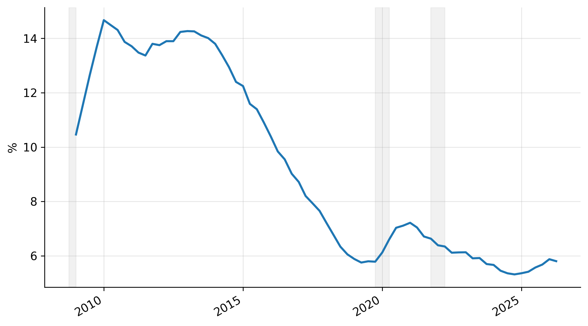
Obr. 16.1 Miera nezamestnanosti v slovenskej ekonomike#
Zdroj: vlastné spracovanie na základe údajov Eurostatu.
Na Obr. 16.2 sú zobrazené cyklické zložky reálneho HDP a miery nezamestnanosti. Miera nezamestnanosti je mierne kontracyklická a za hospodárskym cyklom zaostáva. Najsilnejšiu koreláciu s cyklickou zložkou HDP dosahuje pri oneskorení o dva štvrťroky.
Interpretácia cyklických charakteristík
Cyklické charakteristiky slovenského trhu práce treba interpretovať opatrne. Dostupné štvrťročné časové rady sú relatívne krátke a zahŕňajú iba malý počet hospodárskych cyklov. Navyše obsahujú neštandardnú pandemickú krízu, počas ktorej výrazný pokles ekonomickej aktivity nebol sprevádzaný porovnateľne veľkou zmenou nezamestnanosti.
Najvyššia korelácia pri určitom časovom posune preto nemusí predstavovať pravidelný časový posun reakcie trhu práce na hospodársky cyklus. Pri krátkych a perzistentných časových radoch môže byť výsledok ovplyvnený aj polohou jednotlivých cyklov v dostupnej vzorke.
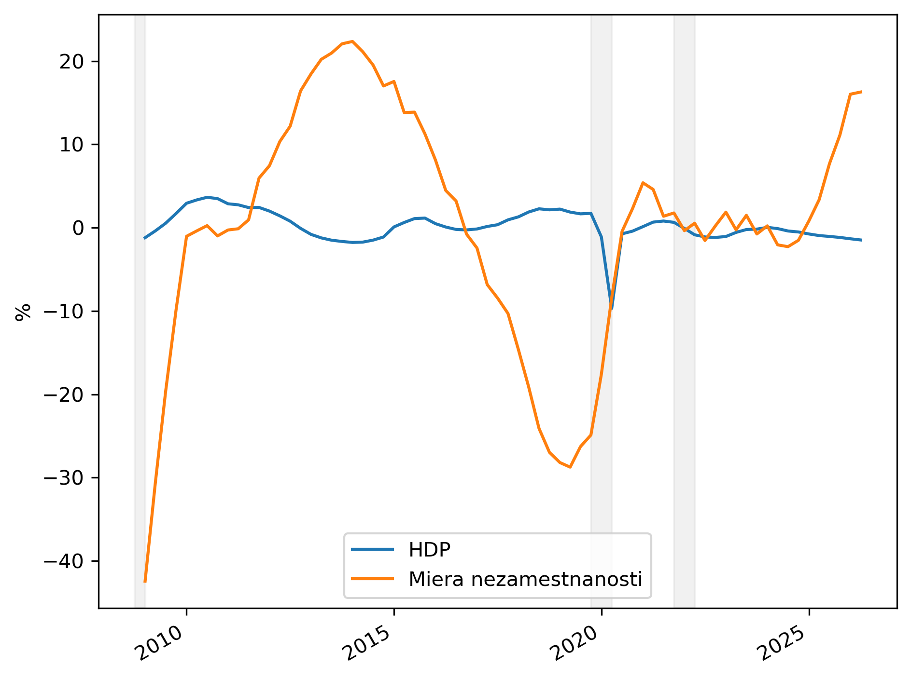
Obr. 16.2 Cyklické zložky reálneho HDP a miery nezamestnanosti v slovenskej ekonomike#
Zdroj: vlastné spracovanie na základe údajov Eurostatu.
16.2.2. Miera zapojenia na trhu práce#
Časový rad miery zapojenia na trhu práce v slovenskej ekonomike Obr. 16.3 pochádza z Eurostatu. Od roku 2009 sa podiel ekonomicky aktívneho obyvateľstva zvýšil z úrovne približne 70 % na 76,5 %.
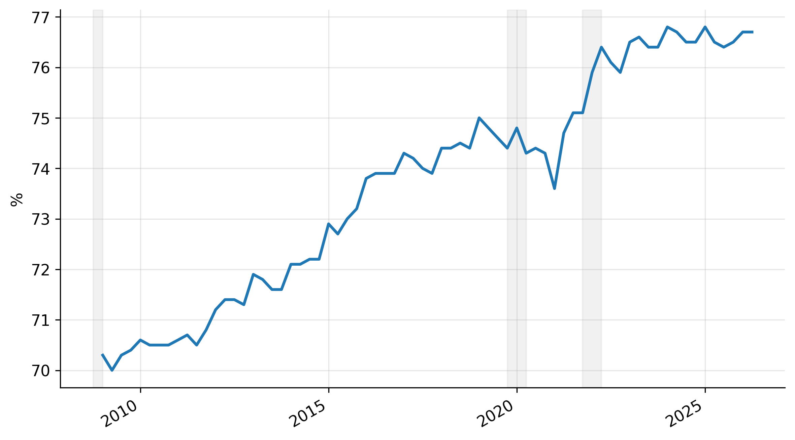
Obr. 16.3 Miera zapojenia na trhu práce v slovenskej ekonomike#
Zdroj: vlastné spracovanie na základe údajov Eurostatu.
Miera zapojenia vykazuje slabú procyklickú väzbu. Najvyššiu koreláciu dosahuje pri oneskorení dvoch štvrťrokov.
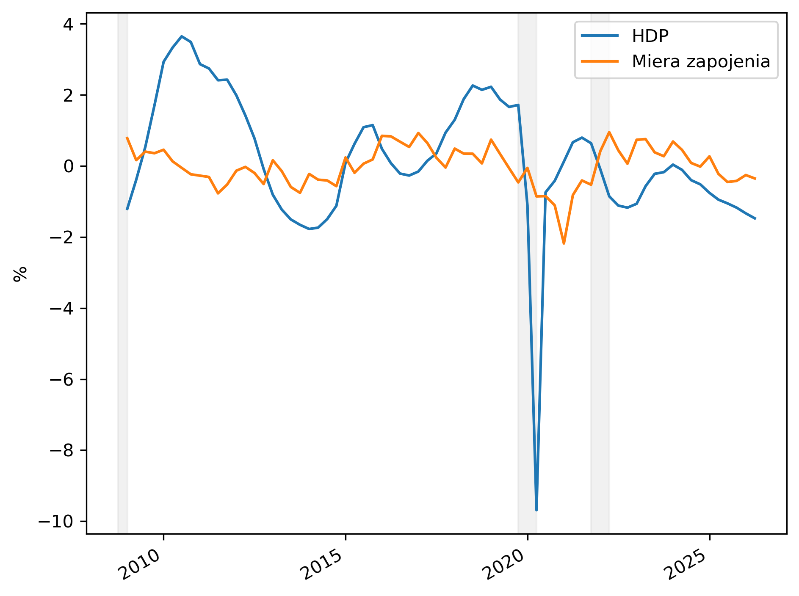
Obr. 16.4 Cyklické zložky reálneho HDP a miery zapojenia na trhu práce v slovenskej ekonomike#
Zdroj: vlastné spracovanie na základe údajov Eurostatu.
16.2.3. Miera zamestnanosti#
Miera zapojenia na trhu práce zachytáva rozhodnutie jednotlivcov zúčastňovať sa na trhu práce bez ohľadu na to, či sú práve zamestnaní alebo nezamestnaní. Ľudia často zostávajú súčasťou pracovnej sily aj počas období, keď si nedokážu okamžite nájsť zamestnanie. Pokles ekonomickej aktivity sa preto nemusí prejaviť odchodom z trhu práce, ale skôr presunom časti pracovnej sily zo zamestnanosti do nezamestnanosti.
Z tohto dôvodu bývajú cyklické výkyvy miery zapojenia na trhu práce pomerne slabé. Reakciu trhu práce na hospodársky cyklus preto často lepšie zachytáva miera zamestnanosti, ktorá priamo meria podiel obyvateľstva s pracovným miestom. Zmeny zamestnanosti tak vernejšie odrážajú zmeny dopytu po práci v jednotlivých fázach hospodárskeho cyklu.
Na Obr. 16.5 sú zobrazené cyklické zložky reálneho HDP a miery zamestnanosti. Časový rad miery zamestnanosti pochádza z Eurostatu. Z grafu usudzujeme, že miera zamestnanosti je procyklická a reaguje na hospodársky cyklus s určitým omeškaním.
Korelačná analýza však túto závislosť zachytáva iba čiastočne. Reakcia zamestnanosti na hospodársky cyklus nie je viazaná na jedno konkrétne oneskorenie. V jednotlivých recesiách a expanziách sa prejavuje s rôzne dlhým časovým odstupom a prispôsobovanie zamestnanosti prebieha postupne počas viacerých štvrťrokov. Kladná korelácia je preto rozložená medzi viacero časových posunov, čo vedie k tomu, že ani maximálna korelácia pri jedinom posune nedosahuje vysoké hodnoty.
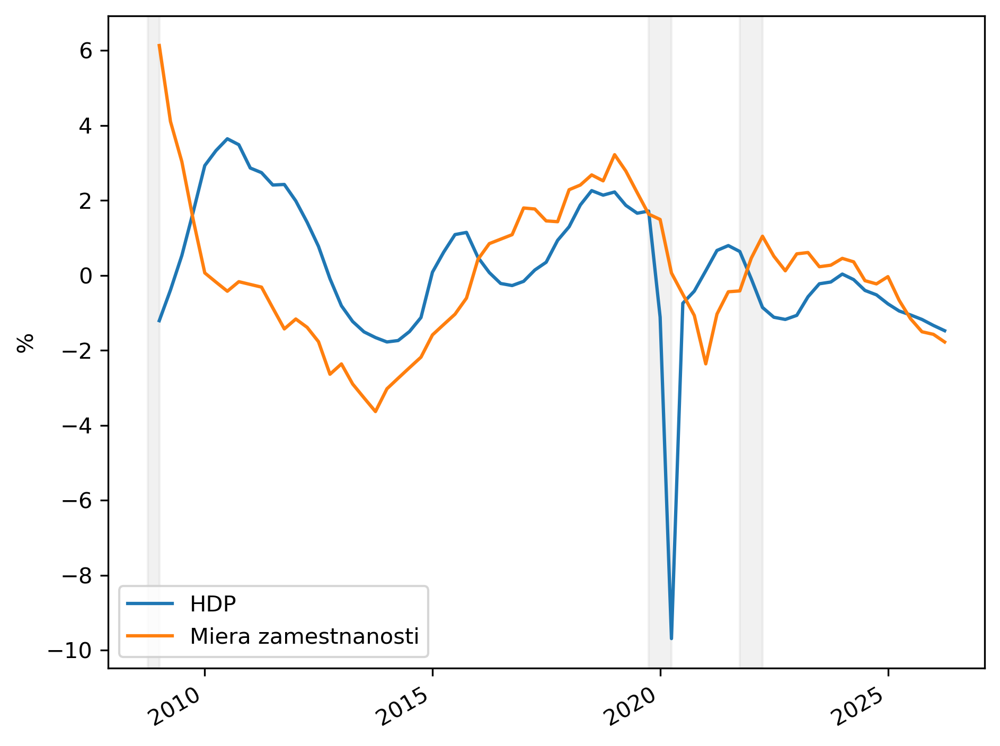
Obr. 16.5 Cyklické zložky reálneho HDP a miery zamestnanosti v slovenskej ekonomike#
Zdroj: vlastné spracovanie na základe údajov Eurostatu.
16.2.4. Miera voľných pracovných miest a Beveridgeova krivka#
Časový rad miery voľných pracovných miest v slovenskej ekonomike na Obr. 16.6 pochádza z Eurostatu.
Hodnoty ukazovateľa sa počas väčšiny sledovaného obdobia pohybujú v intervale približne 0,7 % až 1,5 %. Zverejňovanie údajov zaokrúhlených na jedno desatinné miesto preto spôsobuje výraznú stratu informácie a vedie k umelým skokom v časovom rade. Tento problém je obzvlášť závažný pri analýze cyklickej zložky, ktorá sa opiera o relatívne malé krátkodobé výkyvy okolo trendu.
Z tohto dôvodu cyklické charakteristiky miery voľných pracovných miest neprezentujeme a časový rad využívame iba na ilustráciu dlhodobejšieho vývoja ukazovateľa.
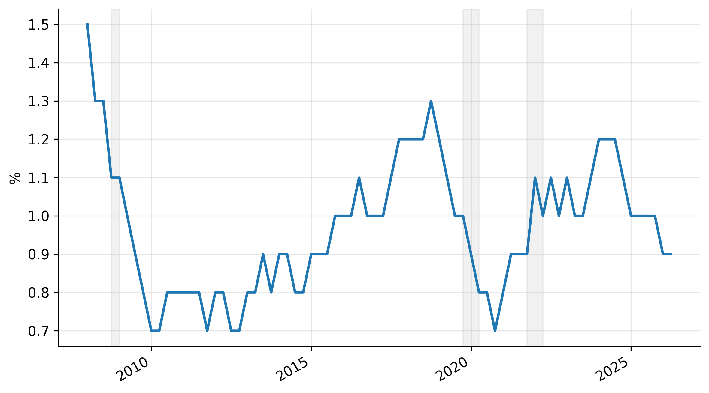
Obr. 16.6 Miera voľných pracovných miest v slovenskej ekonomike#
Zdroj: vlastné spracovanie na základe údajov Eurostatu.
Pre mieru voľných pracovných miest je charakteristická negatívna korelácia s mierou nezamestnanosti, ktorá sa potvrdzuje aj na Obr. 16.7. Na grafe sú miera nezamestnanosti a miera voľných pracovných miest normalizované na hodnotu \(100\) v prvom štvrťroku 2009. Pozorujeme, že obdobia rastu miery nezamestnanosti sú spravidla sprevádzané poklesom miery voľných pracovných miest a naopak.
- Beveridgeova krivka
Beveridgeova krivka vyjadruje negatívny vzťah medzi mierou nezamestnanosti a mierou voľných pracovných miest [Bev44]. V obdobiach recesie býva miera nezamestnanosti vysoká a počet voľných pracovných miest nízky. Naopak, počas expanzií klesá miera nezamestnanosti a rastie počet voľných pracovných miest. Beveridgeova krivka preto patrí medzi základné empirické charakteristiky trhu práce.
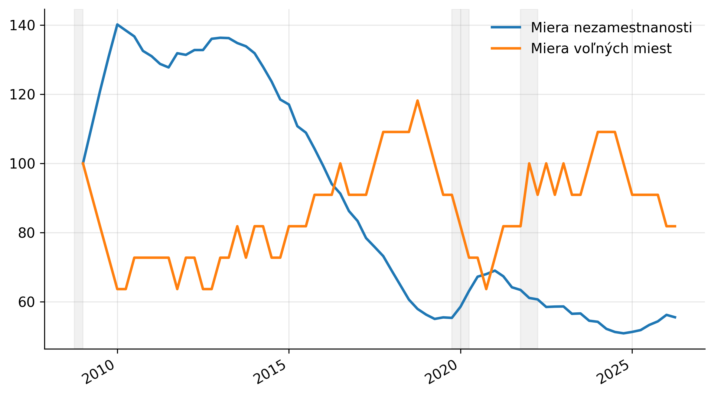
Obr. 16.7 Miera nezamestnanosti a miera voľných pracovných miest v slovenskej ekonomike#
Zdroj: vlastné spracovanie na základe údajov Eurostatu.
Na Obr. 16.8 je zobrazený dynamický pohyb dvojíc miery nezamestnanosti a miery voľných pracovných miest od prvého štvrťroka 2009.
Podľa grafu nie je vzťah medzi mierou nezamestnanosti a mierou voľných pracovných miest v slovenskej ekonomike stabilný. Pozorovania sa nekoncentrujú okolo jednej Beveridgeovej krivky, ale vytvárajú viacero čiastočne odlišných trajektórií. V niektorých obdobiach dochádzalo k výraznému poklesu miery nezamestnanosti bez zodpovedajúceho rastu miery voľných pracovných miest. Táto skutočnosť naznačuje, že poloha Beveridgeovej krivky sa mohla v čase meniť.
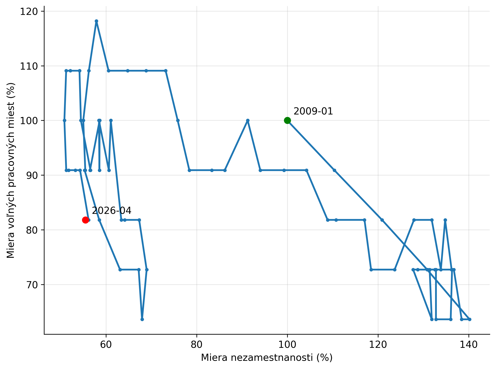
Obr. 16.8 Dynamika Beveridgeovej krivky v slovenskej ekonomike#
Zdroj: vlastné spracovanie na základe údajov Eurostatu.
16.2.5. Mzdová sadzba a priemerný produkt práce#
Cenou práce je mzdová sadzba. V súlade s empirickou literatúrou je reálna mzdová sadzba spravidla považovaná za procyklickú veličinu. Počas období expanzie rastie produktivita práce, dopyt po práci a zvyčajne aj reálne mzdy. Počas recesií je vývoj opačný.
Vzťah medzi mzdovou sadzbou a hospodárskym cyklom však nie je jednoduché overiť pomocou agregovaných údajov. Zloženie zamestnanej pracovnej sily sa v priebehu hospodárskeho cyklu mení. V recesiách často zanikajú pracovné miesta s nižšou produktivitou a nižšími mzdami, zatiaľ čo počas expanzií vznikajú nové pracovné miesta aj pre menej kvalifikovaných pracovníkov. Priemerná mzda preto nemusí presne odrážať zmenu odmeny za rovnakú prácu.
Z tohto dôvodu neprezentujeme cyklické charakteristiky mzdovej sadzby. V ďalšej analýze budeme vychádzať z predpokladu, že mzdová sadzba je procyklická.
Empiricky je podstatne jednoduchšie merať priemerný produkt práce.
V predchádzajúcich častiach Správanie firmy sme ukázali, že firma maximalizujúca zisk dopytuje prácu dovtedy, kým sa mzdová sadzba nevyrovná hraničnému produktu práce (3.7). Mzdová sadzba by preto mala úzko súvisieť s produktivitou práce. Hoci hraničný produkt práce nie je možné priamo pozorovať, priemerný produkt práce poskytuje prirodzenú aproximáciu produktivity práce v ekonomike (pozri tiež Obr. 2.7).
Slovenský priemerný produkt práce sme vypočítali ako podiel reálneho HDP a počtu zamestnaných. Cyklické zložky HDP a priemerného produktu práce sú zobrazené na Obr. 16.9. Priemerný produkt práce je procyklický a súbežný.
Hodnota korelácie medzi cyklickou zložkou HDP a priemerného produktu práce je nižšia, než býva uvádzané v literatúre pre vyspelé ekonomiky. Pri interpretácii tohto výsledku je však potrebná opatrnosť. Štvrťročné časové rady dostupné pre slovenskú ekonomiku sú relatívne krátke a zahŕňajú iba malý počet hospodárskych cyklov. Navyše obsahujú aj neštandardnú pandemickú krízu, počas ktorej boli vzťahy medzi makroekonomickými premennými výrazne ovplyvnené administratívnymi obmedzeniami a mimoriadnymi hospodárskymi politikami.
Napriek týmto obmedzeniam je zrejmé, že priemerný produkt práce patrí medzi premenné s najsilnejšou väzbou na hospodársky cyklus. Tento výsledok je v súlade s teoretickým predpokladom, že produktivita práce a mzdová sadzba úzko súvisia s dopytom po práci a s úrovňou ekonomickej aktivity.
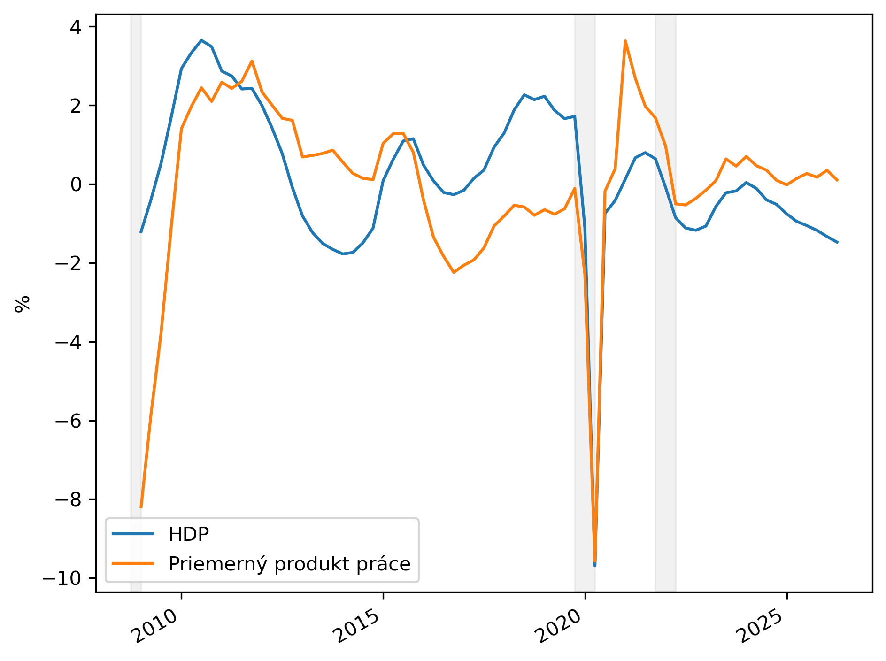
Obr. 16.9 Priemerný produkt práce v slovenskej ekonomike#
Zdroj: vlastné spracovanie na základe údajov Eurostatu.
Zhrnutie cyklických charakteristík časových radov ukazovateľov trhu práce v tabuľke je na Obr. 16.10.
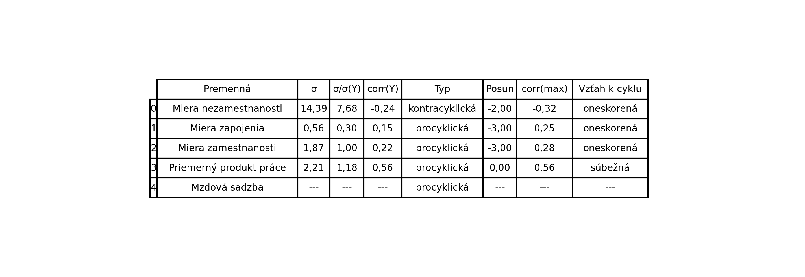
Obr. 16.10 Cyklické charakteristiky časových radov ukazovateľov trhu práce#
Zdroj: vlastné spracovanie na základe údajov Eurostatu.
16.3. Čo dokážu vysvetliť doterajšie teórie?#
Pozorované charakteristiky trhu práce sa najskôr pokúsime interpretovať pomocou teórií, ktoré už poznáme.
V statickom modeli (Statický model všeobecnej rovnováhy) sme analyzovali dôsledky zmien celkovej produktivity faktorov produktivity a fiškálnej politiky. Takéto zmeny môžu predstavovať šoky spôsobujúce krátkodobé alebo dlhodobé výkyvy ekonomiky. Ako dobre zapdajú fiškálne šoky a šoky celkovej produktivity faktorov do pozorovaných charakteristík v slovenskej ekonomike a vo svete?
Zvýšenie vládnych nákupov alebo daňové zmeny môžu viesť k rastu výstupu a práce. Súčasne však klesá spotreba a reálna mzdová sadzba.
Takýto mechanizmus potvrdzuje predpoklad procyklickosti miery zamestnanosti (Obr. 16.5). Reakcia zamestnanosti na fiškálny šok má rovnaký smer ako reakcia výstupu, hoci v údajoch pozorujeme určité oneskorenie jej prispôsobenia.
Model však nepodporuje procyklickosť spotreby (Obr. 13.14) ani reálnej mzdovej sadzby (Obr. 16.10). V statickom modeli totiž zvýšenie vládnych nákupov vedie k poklesu spotreby a reálnej mzdovej sadzby, kým v údajoch sa obe veličiny správajú prevažne procyklicky.
Zvýšenie výstupu po zvýšení vládnych nákupov je v statickom modeli spôsobené rastom práce vyvolaným príjmovým efektom. Ak sa zvýši práca bez zmeny celkovej produktivity faktorov, výstup síce vzrastie, ale priemerný produkt práce klesne. Tento mechanizmus ilustruje pravý panel Obr. 2.7.
Empirické údaje však naznačujú opačný vzťah. Priemerný produkt práce je procyklický (Obr. 16.9) a v priebehu hospodárskeho cyklu sa spravidla mení rovnakým smerom ako reálny HDP. Fiškálne šoky preto nedokážu uspokojivo vysvetliť pozorované správanie priemerného produktu práce.
Odlišné závery poskytuje šok celkovej produktivity faktorov. Rast produktivity v statickom modeli všeobecnej rovnováhy zvyšuje výstup, spotrebu a reálnu mzdovú sadzbu. Ak je navyše substitučný efekt medzi voľným časom a spotrebou silnejší ako príjmový efekt, rastie aj práca.
Tento mechanizmus je preto v súlade s viacerými pozorovanými charakteristikami hospodárskeho cyklu. Všetky uvedené premenné sa menia rovnakým smerom ako výstup, čo zodpovedá ich pozorovanej procyklickosti.
Rast výstupu je primárne spôsobený rastom celkovej produktivity faktorov a pri dostatočne silnom substitučnom efekte aj rastom práce. Podľa pravého panela Obr. 2.9 vedie rast produktivity k zvýšeniu priemerného produktu práce. Priemerný produkt práce preto na šoky celkovej produktivity faktorov reaguje rovnakým smerom ako výstup, čo je v súlade s empirickými pozorovaniami.
Ak sa súčasne zvýšia práca aj celková produktivita faktorov, priemerný produkt práce sa napriek rastu zamestnanosti zvýši. Tento výsledok ilustruje Obr. 16.11. Pôvodný rovnovážny bod na produkčnej funkcii je zobrazený modrou farbou, zatiaľ čo nový bod po zvýšení celkovej produktivity faktorov a práce je označený červenou farbou. Prerušované čiary spájajú oba body so začiatkom súradnicovej sústavy.
Podľa geometrickej interpretácie hraničného a priemerného produktu vsupu Obr. 2.4, priemerný produkt práce je daný sklonom spojnice spájajúcej začiatok súradnicovej sústavy s bodom na produkčnej funkcii. Na obrázku vidíme, že sklon tejto spojnice je po zvýšení celkovej produktivity faktorov a práce väčší. Priemerný produkt práce sa preto zvýši aj vtedy, keď šok celkovej produktivity faktorov vedie súčasne k rastu zamestnanosti.
Ak by sme mali na základe pozorovaných cyklických charakteristík časových radov a doterajších teoretických poznatkov vybrať medzi fiškálnymi šokmi a šokmi celkovej produktivity faktorov ako kandidátmi na hlavný zdroj hospodárskych cyklov, priklonili by sme sa k šokom celkovej produktivity faktorov.
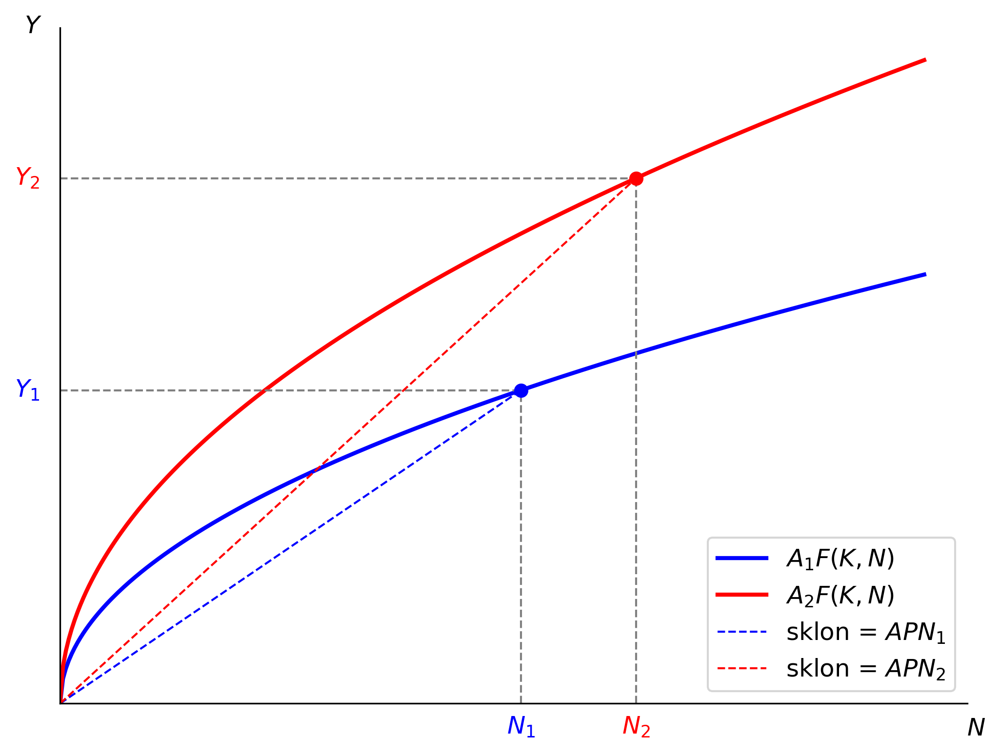
Obr. 16.11 Procyklickosť priemerného produktu práce#
V modeli prídelovej ekonomiky sme uviedli, že šoky môžu mať trvalý, dočasné alebo pretrvávajúci vplyv na príjem, čo ovplyvňuje hraničný sklon k spotrebe (Pretrvávajúce zmeny príjmu). Podľa cyklických charakteristík investícií a spotreby sme využitím týchto poznatkov v časti Spotreba, investície a Friedmanova hypotéza trvalého príjmu v praxi usúdili, že slovenská ekonomika mohla byť ovplyvnená aj pretrvávajúcimi aj trvalými šokmi.
Teória ekonomického rastu analyzuje zmeny dlhodobých trendov spôsobených trvalými šokmi. V dlhom období možno rast životnej úrovne vysvetliť najmä akumuláciou ľudského kapitálu a rastom úrovne technológie (Konvergencia a ustálený rast), ktorá predstavuje celkovú produktivitu fektorov.
Pokúsme sa skombinovať poznatky teórie rastu so statickým modelom všeobecnej rovnováhy. Statický model uvažuje jediné rozhodovacie obdobie, ktoré možno interpretovať ako celý život jednotlivca. Ak sa v modeli zvýši celková produktivita faktorov, v tejto interpretácii ide o trvalú zmenu, ktorá pretrváva po celý život.
Reakcia práce na rast produktivity závisí od relatívnej sily substitučného a príjmového efektu. V krátkom období sme predpokladali, že substitučný efekt prevláda, a preto sa práca mení rovnakým smerom ako výstup.
Z dlhodobého hľadiska je však situácia odlišná. Rast produktivity zvyšuje odmenu za prácu, ale súčasne zvyšuje aj blahobyt domácností. Ak rast životnej úrovne pretrváva, jednotlivci nemajú dôvod neustále zvyšovať pracovné úsilie. Možno sa preto domnievať, že v dlhom období sa substitučný a príjmový efekt približne vyrovnávajú. Teória ekonomického rastu preto nepredpokladá systematický rast práce ani trvalý pokles miery nezamestnanosti.
Dlhodobý rast životnej úrovne musí byť preto založený predovšetkým na raste produktivity práce. Pri trvalom raste intenzívneho výstupu rastie priemerný produkt práce aj reálna mzdová sadzba, ktorá sa v rovnováhe rovná hraničnému produktu práce.
Hoci teória rastu nepredpokladá systematický rast práce, v slovenskej ekonomike sme pozorovali výrazný a dlhodobý pokles miery nezamestnanosti až na úroveň približne 6 %. Teória rastu nám tak pomáha pochopiť rast produktivity, miezd a životnej úrovne, neposkytuje však uspokojivú odpoveď na otázku, prečo sa nezamestnanosť v slovenskej ekonomike dlhodobo znižovala.
Hoci pretrvávajúce a trvalé šoky celkovej produktivity faktorov dokážu vysvetliť viaceré pozorované charakteristiky hospodárskeho cyklu, nedokážu uspokojivo odpovedať na niekoľko dôležitých otázok.
Prečo v ekonomike existuje nezamestnanosť? Prečo existuje negatívny vzťah medzi mierou nezamestnanosti a mierou voľných pracovných miest? A prečo sa na Slovensku v posledných desaťročiach výrazne znížila miera nezamestnanosti a pravdepodobne došlo aj k posunom Beveridgeovej krivky?
Na zodpovedanie týchto otázok potrebujeme model, v ktorom vznik nezamestnanosti vyplýva priamo z fungovania trhu práce. Takým modelom je model vyhľadávania.
16.4. Model vyhľadávania#
Predstavíme jednoduchú statickú verziu modelu vyhľadávania od Dalea Mortensena a Christophera Pissaridesa [MP94], ktorí spolu s Petrom Diamondom získali v roku 2010 Nobelovu cenu za prínos k teórii vyhľadávania na trhu práce [NobelPCommittee10].
V modeli vystupujú spotrebitelia, ktorí hľadajú prácu, a firmy, ktoré hľadajú pracujúcich pre svoje voľné pracovné miesta.
Najskôr popíšeme proces obsadzovania voľných pracovných miest a následne skonštruujeme rovnováhu modelu. Pomocou komparatívnej statiky preskúmame, aké faktory ovplyvňujú mieru nezamestnanosti, mieru voľných pracovných miest a mieru zapojenia na trhu práce. Získané poznatky potom využijeme na interpretáciu pozorovaných charakteristík slovenského trhu práce.
16.4.1. Spotrebitelia#
V ekonomike žije \(N\) spotrebiteľov. Z nich
\(Q\) sa rozhodne hľadať prácu a zapojí sa na trh práce;
\(N-Q\) sa rozhodne na trh práce nezapojiť.
Čo určuje rozhodnutie zapojiť sa na trh práce?
Rozhodnutie jednotlivca hľadať prácu závisí od očakávaného benefitu z hľadania práce \(P\). Čím je očakávaný benefit vyšší, tým viac jednotlivcov sa rozhodne vstúpiť na trh práce a uchádzať sa o zamestnanie.
Vzťah medzi očakávaným benefitom hľadania práce a počtom uchádzačov môžeme vyjadriť funkciou
ktorá je zobrazená na Obr. 16.12.
Očakávaný benefit z hľadania práce zahŕňa pravdepodobnosť nájdenia zamestnania aj odmenu, ktorú spotrebiteľ po získaní práce očakáva.
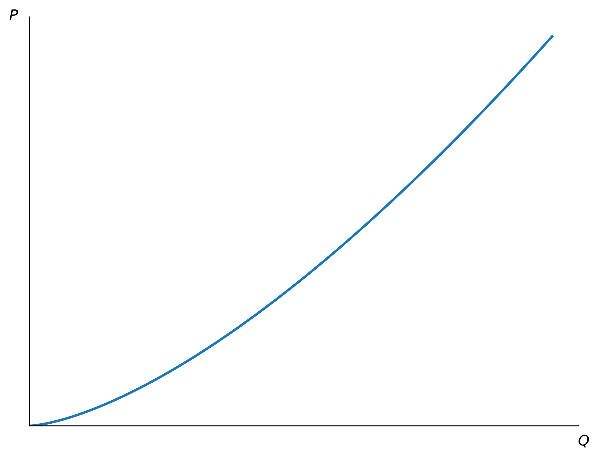
Obr. 16.12 Benefit z hľadania práce#
16.4.2. Firmy#
V ekonomike pôsobí \(J\) firiem, pričom každá firma sa snaží obsadiť jedno pracovné miesto.
Obsadenie voľného pracovného miesta je spojené s nákladmi na vyhľadávanie vhodného pracujúceho. Predpokladáme, že tieto náklady sú pre všetky firmy rovnaké a označíme ich symbolom \(k\).
16.4.3. Proces obsadzovania pracovných miest#
Proces obsadzovania pracovných miest opíšeme funkciou vyhľadávania. Jej vstupmi sú počet spotrebiteľov zapojených na trh práce a počet pracovných miest. Výstupom je počet úspešne obsadených pracovných miest. Zapíšeme ju v tvare
kde \(E\) je počet obsadených pracovných miest a \(e\) je efekt vyhľadávania. Vyššia hodnota parametra \(e\) znamená, že pri rovnakom počte uchádzačov o prácu a rovnakom počte pracovných miest sa obsadí viac pracovných miest.
O funkcii \(m(Q,J)\) predpokladáme rovnaké vlastnosti ako o makroekonomickej produkčnej funkcii.
Funkcia je rastúca vo vstupoch. Čím viac spotrebiteľov hľadá prácu a čím viac je pracovných miest, tým viac pracovných miest sa podarí obsadiť.
Funkcia je konkávna vo vstupoch. S rastom spotrebiteľov hľadajúcich prácu a pracovných miest, prírastky obsedených pracovných miest klesajú.
Konštantné výnosy z rozsahu: ak sa zvýši počet spotrebiteľov hľadajúcich prácu a počet pracovných miest o 1 percento, počet obsadených miest sa zvýši o 1 %. Pre ľubovoľné \(\lambda>0\) platí:
\[ \lambda\,E=e\,m(\lambda\,Q,\lambda\,J). \]Funkcia \(m(Q,J)\) vychádza zo začiatku súradnicového systému,
\[ 0=m(0,J)=m(Q,0). \]Zo vzťahu (16.2) vyplýva, že počet obsadených pracovných miest je priamo úmerný efektívnosti procesu obsadzovania pracovných miest \(e\). Elasticita počtu obsadených pracovných miest podľa parametra \(e\) sa preto rovná jednej:
\[ \lambda\,M=\lambda\,e\,m(Q,V). \]
Efekt vyhľadávania zachytáva všetky faktory, ktoré ovplyvňujú schopnosť pracujúcich nájsť voľné pracovné miesta a schopnosť firiem nájsť vhodných pracujúcich.
Efekt vyhľadávania závisí napríklad od:
spôsobov sprostredkovania pracovných miest;
kvality informačných systémov na trhu práce;
činnosti úradov práce a personálnych agentúr;
geografickej mobility pracujúcich;
kvalifikačnej štruktúry pracujúcich;
kvalifikačných požiadaviek voľných pracovných miest.
Napríklad v minulosti sa voľné pracovné miesta obsadzovali najmä prostredníctvom novinových inzerátov, osobných kontaktov a úradov práce. Dnes zohrávajú významnú úlohu elektronické pracovné portály, personálne agentúry a firemné informačné systémy. Tieto zmeny môžu zvyšovať efekt vyhľadávania.
Dôležitý je aj súlad medzi kvalifikačnou štruktúrou pracujúcich a požiadavkami firiem. Ak pracujúci disponujú zručnosťami, ktoré firmy požadujú, voľné pracovné miesta sa obsadzujú jednoduchšie a efekt vyhľadávania je vyšší.
16.4.4. Ponuková strana trhu práce (správanie spotrebiteľov)#
Prvou otázkou každého spotrebiteľa je, či sa zapojí na trh práce. Má si hľadať prácu alebo sa na trh práce nezapojiť?
Rozhodnutie závisí od očakávaného benefitu z hľadania práce.
Aký benefit spotrebiteľ získa, ak sa rozhodne vstúpiť na trh práce?
Benefit závisí od toho, či sa mu podarí nájsť zamestnanie.
Ak nájde prácu, získa reálnu mzdu \(w\).
Ak prácu nenájde, získa podporu v nezamestnanosti \(b\).
Na výpočet očakávaného benefitu z hľadania práce preto potrebujeme poznať pravdepodobnosť nájdenia a nenájdenia práce.
Zo \(Q\) uchádzačov o prácu nájde zamestnanie \(E\) spotrebiteľov. Pravdepodobnosť nájdenia práce je preto
Po dosadení funkcie vyhľadávania získame
kde
je miera nasýtenia trhu práce.
Pravdepodobnosť, že spotrebiteľ prácu nenájde je
Očakávaný benefit z hľadania práce je vážený aritmetický priemer mzdy \(w\) a podpory v nezamestnanosti \(b\), pričom váhami sú príslušné pravdepodobnosti:
Po dosadení pravdepodobností (16.3) a (16.4) získame
Na Obr. 16.13 je znázornený očakávaný benefit z hľadania práce pre dané hodnoty podpory v nezamestnanosti \(b\), reálnej mzdy \(w\), efektu vyhľadávania \(e\) a funkcie vyhľadávania \(m\). Zodpovedajúci počet spotrebiteľov zapojených na trh práce je označený ako \(Q_1\).
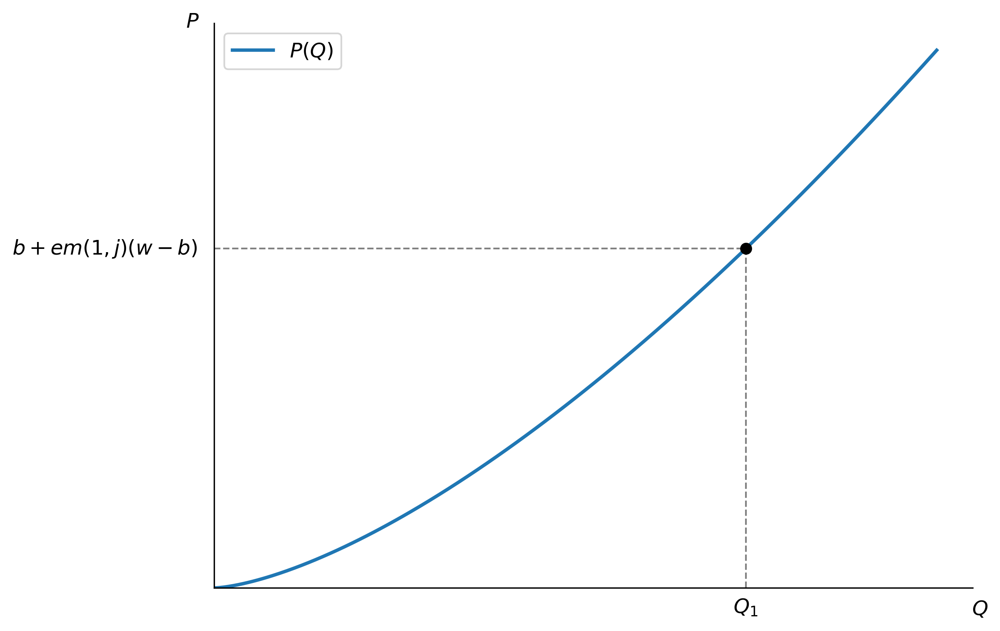
Obr. 16.13 Pracovná sila pri danom benefite z hľadania práce#
16.4.5. Dopytová strana trhu práce (správanie firiem)#
Aby sme vyjadrili benefit z obsadenia voľného pracovného miesta, potrebujeme poznať pravdepodobnosť, s akou sa firme podarí nájsť pracujúceho.
Z \(J\) pracovných miest sa podarí obsadiť \(E\). Pravdepodobnosť obsadenia pracovného miesta je preto
Po dosadení funkcie vyhľadávania získame
Ak firma obsadí voľné pracovné miesto, firma a pracujúci spoločne vyprodukujú \(A\) jednotiek výstupu.
Všimnite si
Predpokladáme, že jeden pracujúci vo firme vyprodukuje \(A\) jednotiek. Inými slovami, v zjednodušenom modeli predpokladáme lineárnu produkčnú funkciu
Hraničný aj priemerný produkt práce je
Firma musí zaplatiť spotrebiteľovi reálnu mzdu \(w\) . Benefit z obsadenia voľného pracovného miesta preto predstavuje rozdiel \(A-w\).
Očakávaný benefit obsadenia miesta je \(p_f(A-w)\).
Firmy budú vytvárať pracovné miesta dovtedy, kým sa očakávaný benefit z ich obsadenia nevyrovná nákladom na ich vytvorenie a obsadenie. Správanie firmy preto charakterizuje rovnica
Všimnite si
(16.7) zodpovedá všeobecnému mikroekonomickému správaniu firmy, podľa ktorého sa hraničné príjmy z aktivít firmy rovnajú hraničným nákladom (3.2). V modeli vyhľadávania je aktivitou firmy obsadenie voľného pracovného miesta. Očakávaný hraničný príjem aktivity je
Očakávaný hraničný náklad aktivity je
Po dosadení pravdepodobnosti obsadenia pracovného miesta (16.6) do vzťahu (16.7) získame
Po úprave
Na Obr. 16.14 je graficky zobrazený vzťah (16.8) pre dané hodnoty nákladov obsadenia pracovného miesta \(k\), produktivity \(A\), mzdovej sadzby \(w\), efektu vyhľadávania \(e\) a funkcie vyhľadávania \(m\). Z grafu možno získať mieru nasýtenia \(j_1\).
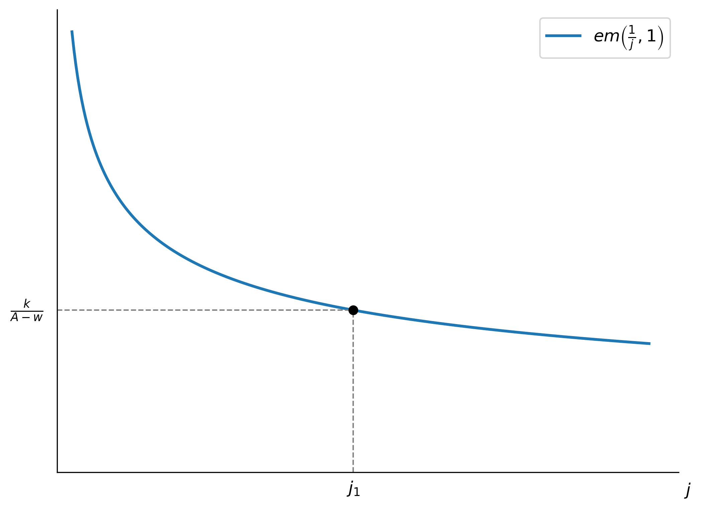
Obr. 16.14 Dopyt po práci v modeli vyhľadávania#
16.5. Rovnováha#
Na úplnú formuláciu rovnováhy potrebujeme ešte zistiť mzdovú sadzbu. V ďalšom kroku preto využijeme Nashovu teóriu vyjednávania. Podľa nej sa firma a spotrebiteľ po svojom stretnutí dohodnú na rozdelení benefitu zo spolupráce tak, aby bolo prijateľné pre obe strany.
Spoločný benefit zo spolupráce získame súčtom benefitov spotrebiteľa a firmy po obsadení pracovného miesta. Ak sa spotrebiteľ a firma dohodnú na obsadení pracovného miesta,
spotrebiteľov benefit bude \(w-b\);
benefit firmy bude \(A-w\) a
spoločný benefit bude \(w-b+A-w=A-b\)
Podľa Nashovej teórie vyjednávania si spotrebiteľ a firma rozdelia spoločný benefit \(A-b\). Označme spotrebiteľov podiel na benefite \(d\). Podiel \(d\) závisí od vyjednávacej sily spotrebiteľa. Zvyšok, \(1-d\) si vezme firma.
Po dosadení je spotrebiteľov benefit
a benefit firmy je
Zo zápisov (16.9) a (16.10) možno odvodiť mzdovú sadzbu
Dosadením (16.9) do očakávaného benefitu (16.5) získame podmienku rovnováhy na ponukovej strane trhu práce
Dosadením (16.10) do (16.8) získame podmienku rovnováhy na dopytovej strane trhu práce.
Na Obr. 16.15 je geometrická interpretácia rovnováhy. Ponuková strana je v hornom paneli, dopytová v dolnom.
Exogénne premenné a parametre modelu sú podpora spotrebiteľa v nezamestnanosti \(b\), náklady firmy na obsadenie pracovného miesta \(k\), produktivita obsadeného pracovného miesta \(A\), efekt vyhľadávania \(e\) a podiel spotrebiteľa zo spoločného benefitu \(d\).
Pre dané hodnoty exogénnych premenných a parametrov modelu a pre daný tvar funkcie vyhľadávania \(m\) možno vypočítať rovnovážnu mieru nasýtenia trhu práce \(j^*\). Tomuto výpočtu zodpovedá bod v dolnom paneli Obr. 16.15.
Po získaní rovnovážnej miery nasýtenia \(j^*\) možno z rovnovážnej podmienky na ponukovej strane trhu práce určiť aj rovnovážny počet spotrebiteľov zapojených na trhu práce \(Q^*\). Tomuto výpočtu zodpovedá bod v hornom paneli Obr. 16.15.
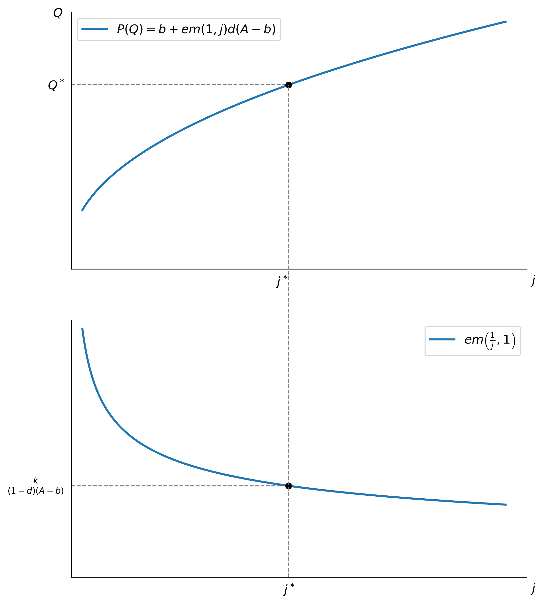
Obr. 16.15 Rovnováha v modeli vyhľadávania#
Ak poznáme dvojicu miery nasýtenia \(j^*\) a počtu zapojených spotrebiteľov \(Q^*\),, môžeme vypočítať mieru nezamestnanosti, mieru voľnýhc miest a výstup.
Miera nezamestnanosti je podiel nezamestnaných na všetkých spotrebiteľov zapojených na trhu práce. Nezamestnaní, sú tí spotrebitelia, ktorým sa nepodarilo nájsť zamestnanie. Zo spotrebiteľov hľadajúcich prácu \(Q^*\), nenájde prácu \((1-p_c)Q^*\). Miera nezamestnanosti je
Po dosadení za pravdepodobnosť vyhľadania práce (16.3) získame
Miera voľných pracovných miest je podiel neobsadených pracovných miest na všetkých pracovných miestach.
Keďže \(E\) predstavuje počet obsadených pracovných miest a \(J\) celkový počet pracovných miest, miera voľných pracovných miest je
Po dosadení vzťahu
získame
Po dosadení za pravdepodobnosť obsadenia práce (16.6) máme
Rovnovážny výstup je
16.6. Komparatívna statika#
V rámci komparatívnej statiky analyzujeme
vplyv zmeny podpory v nezamestnanosti \(b\),
vplyv zmeny produktivity \(A\) a
vplyv zmeny efektu vyhľadávania \(e\).
16.6.1. Vplyv zvýšenia podpory v nezamestnanosti#
Ak sa zvýši podpora v nezamestnanosti \(b\), zníži sa benefit firmy podľa vzťahu (16.10). Tým sa zvýši pravá strana rovnice dopytu po práci (16.12). Pri nezmenenej funkcii vyhľadávania sa preto musí znížiť miera nasýtenia trhu práce.
Podľa Obr. 16.16 klesne rovnovážna miera nasýtenia trhu práce z \(j^*_1\) na \(j^*_2\).
Nie je však jednoznačný vplyv podpory v nezamestnanosti \(b\) na ponukovú stranu trhu práce. Zo vzťahu (16.11)
vidíme, že zvýšenie \(b\) pôsobí dvoma protichodnými kanálmi. Na jednej strane priamo zvyšuje benefit z nezamestnanosti, čo zvyšuje pravú stranu rovnice. Na druhej strane znižuje rozdiel \(A-b\), a tým znižuje benefit z obsadenia pracovného miesta. Keďže tieto efekty pôsobia opačným smerom, nedokážeme bez dodatočných predpokladov jednoznačne určiť vplyv podpory v nezamestnanosti na počet spotrebiteľov zapojených na trh práce.
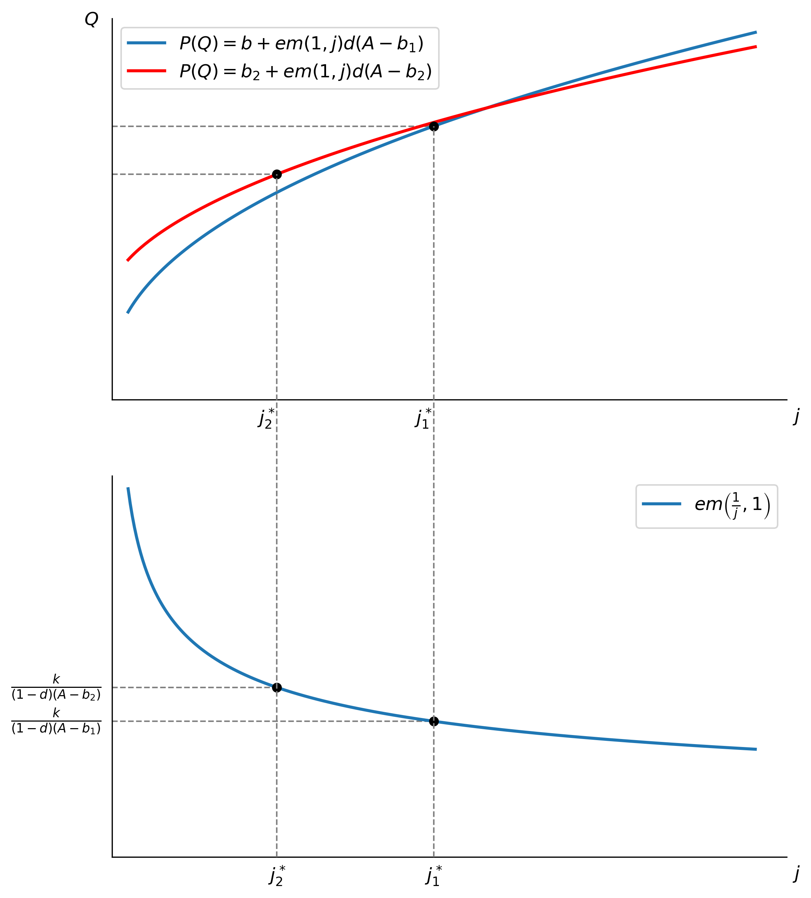
Obr. 16.16 Vplyv zvýšenia podpory nezamestnanosti na rovnováhu na trhu práce#
Vplyvom poklesu miery nasýtenia trhu práce z \(j_1^*\) na \(j_2^*\) sa zníži pravdepodobnosť nájdenia práce
Zo vzťahu (16.13) preto vyplýva, že miera nezamestnanosti sa zvýši.
Súčasne podľa (16.14) sa miera voľných pracovných miest zníži. Na trhu práce zostane menej pracovných miest na jedného uchádzača o zamestnanie, čo znižuje pravdepodobnosť ich obsadenia.
Nie je však jednoznačný vplyv podpory v nezamestnanosti na počet spotrebiteľov zapojených na trh práce \(Q^*\). Preto nedokážeme jednoznačne určiť reakciu zamestnanosti \(E^*\) ani reálneho HDP (16.15).
Všimnite si
Reakcia ekonomiky na zvýšenie podpory v nezamestnanosti je v súlade s Beveridgeovou krivkou. Miera nezamestnanosti rastie, zatiaľ čo miera voľných pracovných miest klesá. Obe premenné sa preto menia opačným smerom.
Dôsledky zvýšenia podpory v nezamestnanosti nevysvetlené modelom
Z ekonomického hľadiska je podpora v nezamestnanosti poistením proti strate príjmu v dôsledku straty zamestnania.
Pri poistení sa často prejavuje Morálny hazard. Poistení jednotlivci venujú menšie úsilie predchádzaniu udalosti, proti ktorej sú poistení.
Pri vyššej podpore v nezamestnanosti sa zamestnaní môžu menej obávať straty práce, pretože aj po prepustení majú zabezpečený príjem vo výške \(b\).
Nezamestnaní môžu vyvíjať menšie úsilie pri hľadaní práce.
Nezamestnaní sa pri výbere pracovného miesta môžu správať vyberavejšie, čo predlžuje dobu nezamestnanosti.
Zvýšenie podpory má za dôsledok zvýšenie odmeny za prácu \(w\) a tým zníženie zamestnávateľovho benefitu. Z toho dôvodu klesne jeho záujem vytvoriť pracovné miesto, klesne miera voľných pracovných miest \(v\), v dôsledku čoho sa práca hľadá ťažšie a zvýši sa miera nezamestnanosti \(u\).
V pokročilejších dynamických modeloch trhu práce môže vyššia podpora v nezamestnanosti znižovať aj motiváciu firiem vytvárať nové pracovné miesta. Tento mechanizmus však náš zjednodušený statický model neobsahuje.
16.6.2. Vplyv zvýšenia produktivity#
Ak sa zvýši produktivita obsadeného pracovného miesta \(A\), zvýši sa benefit firmy (16.10) a zníži sa pravá strana rovnice (16.12). Podľa Obr. 16.17 sa zvýši rovnovážna miera nasýtenia trhu práce z \(j^*_1\) na \(j^*_2\).
Zvýšenie miery nasýtenia trhu práce zvyšuje pravdepodobnosť nájdenia zamestnania
Zo vzťahu (16.13) preto vyplýva, že miera nezamestnanosti sa zníži.
Súčasne sa zvýši pravdepodobnosť obsadenia pracovného miesta
a podľa (16.14) sa preto miera voľných pracovných miest zvýši.
Na ponukovej strane trhu práce pôsobí zvýšenie produktivity dvoma spôsobmi. Rast produktivity zvyšuje očakávaný spoločný benefit vyhľadávanie na pravej strane (16.11). Zodpovedajúca krivka v hornom paneli sa posunie hore.
Súčasne zvýšenie miery nasýtenia trhu práce zvyšuje pravdepodobnosť nájdenia zamestnania. Oba efekty pôsobia rovnakým smerom a zvyšujú očakávaný benefit z hľadania práce.
Podľa Obr. 16.17 sa preto zvýši počet spotrebiteľov zapojených na trhu práce z \(Q^*_1\) na \(Q^*_2\).
Keďže rastie počet spotrebiteľov zapojených na trhu práce \(Q^*\) aj pravdepodobnosť nájdenia zamestnania \(p_c\), zvýši sa zamestnanosť
Zo vzťahu (16.15) vyplýva, že rast produktivity \(A\) a zvýšenie počtu spotrebiteľov zapojených na trhu práce \(Q^*\) vedú k rastu reálneho HDP.
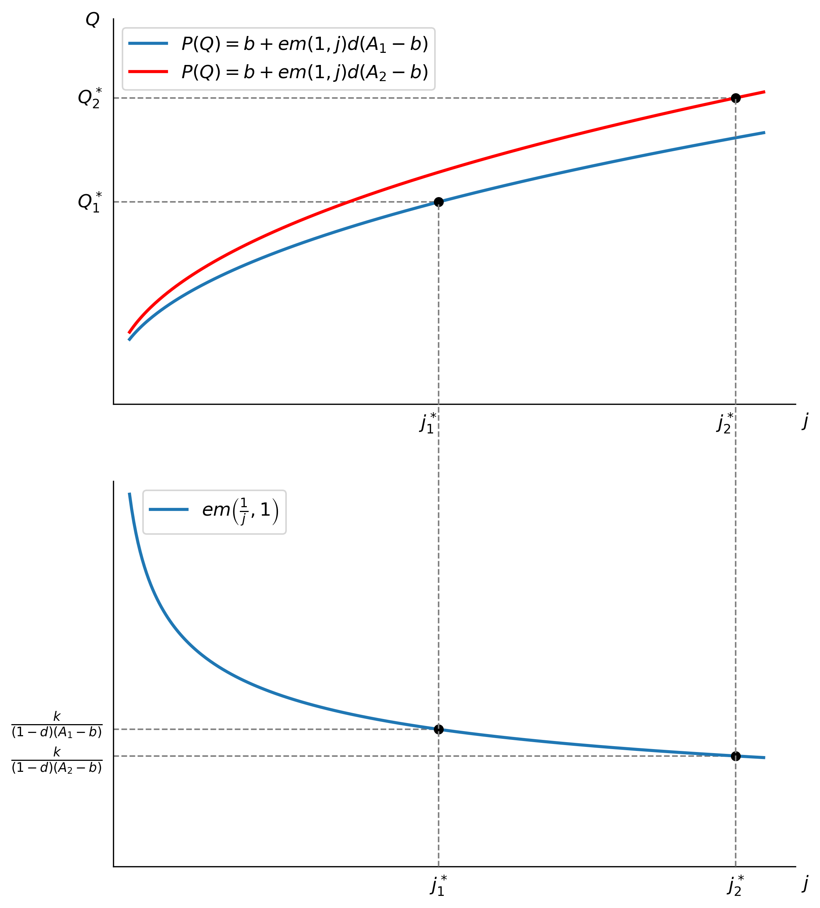
Obr. 16.17 Vplyv zvýšenia produktivity na rovnováhu na trhu práce#
Beveridgeova krivka
Zvýšenie produktivity vedie k poklesu miery nezamestnanosti a rastu miery voľných pracovných miest. Reakcia ekonomiky je preto v súlade s Beveridgeovou krivkou.
16.6.3. Vplyv zvýšenia efektu vyhľadávania#
Ak sa zvýši efekt vyhľadávania \(e\), zvýši sa ľavá strana rovnice (16.12). Podľa Obr. 16.18 sa preto zvýši rovnovážna miera nasýtenia trhu práce z \(j^*_1\) na \(j^*_2\).
Vyššia miera nasýtenia trhu práce zvyšuje pravdepodobnosť nájdenia zamestnania
Zo vzťahu (16.13) preto vyplýva, že miera nezamestnanosti sa zníži.
Na ponukovej strane trhu práce pôsobí zvýšenie efektu vyhľadávanie dvoma spôsobmi. Rast efektu vyhľadávanie zvyšuje očakávaný spoločný benefit na pravej strane (16.11). Zodpovedajúca krivka v hornom paneli sa posunie hore.
Súčasne zvýšenie miery nasýtenia trhu práce zvyšuje pravdepodobnosť nájdenia zamestnania. Oba efekty pôsobia rovnakým smerom a zvyšujú očakávaný benefit z hľadania práce.
Podľa Obr. 16.18 sa preto zvýši počet spotrebiteľov zapojených na trhu práce z \(Q^*_1\) na \(Q^*_2\).
Keďže rastie počet spotrebiteľov zapojených na trhu práce \(Q^*\) aj pravdepodobnosť nájdenia zamestnania \(p_c\), zvýši sa zamestnanosť
Zo vzťahu (16.15) vyplýva, že sa zvýši aj reálny HDP.
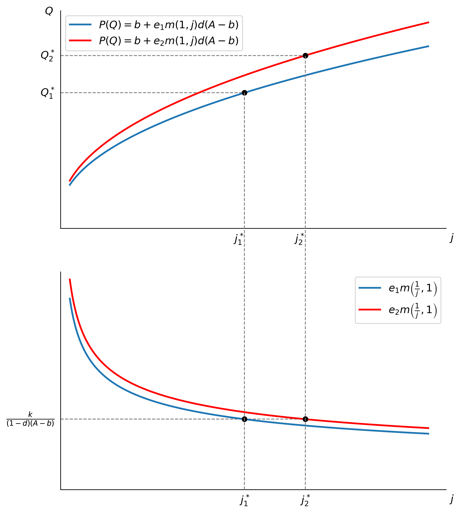
Obr. 16.18 Vplyv zvýšenia efektu párovania na rovnováhu na trhu práce#
Ako sa zmení miera voľných pracovných miest?
Vo vzťahu (16.14) vystupujú v pravdepodobnosti obsadenia pracovného miesta
dva protichodné efekty:
zvýšenie efektu vyhľadávania \(e\) zvyšuje pravdepodobnosť obsadenia pracovného miesta;
zvýšenie miery nasýtenia trhu práce \(j\) znižuje pravdepodobnosť obsadenia pracovného miesta.
Samotný vzťah (16.14) preto neumožňuje jednoznačne určiť reakciu miery voľných pracovných miest.
Lepšie sa zorientujeme pomocou rovnice dopytovej strany trhu práce (16.12). Tá určuje pravdepodobnosť obsadenia pracovného miesta ako
Pravá strana závisí iba od produktivity \(A\), podpory v nezamestnanosti \(b\), nákladov na obsadenie pracovného miesta \(k\) a podielu spotrebiteľa na spoločnom benefite \(d\). Keďže zvýšenie efektu vyhľadávania \(e\) žiadnu z týchto veličín nemení, nezmení sa ani pravdepodobnosť obsadenia pracovného miesta \(p_f\).
Zo vzťahu (16.14) preto vyplýva, že sa nezmení ani miera voľných pracovných miest.
Posuny Beveridgeovej krivky
Po zvýšení efektu vyhľadávania sa zníži miera nezamestnanosti, pričom miera voľných pracovných miest zostáva nezmenená. Zmeny efektu vyhľadávania preto môžu spôsobovať posuny Beveridgeovej krivky.
16.7. Trh práce v slovenskej ekonomike#
Zmeny produktivity a efektu vyhľadávania sú prirodzenými kandidátmi na vysvetlenie dlhodobej aj krátkodobej dynamiky slovenského trhu práce.
Trvalé šoky \(A\) a \(e\) mohli spôsobiť dlhodobé zmeny v trendoch.
Pretrvávajúce alebo dočasné šoky \(A\) a \(e\) mohli ovplyvniť cyklické charakteristiky.
Analyzujme trendy cyklické charakteristiky slovenských časových radov agregátneho trhu práce z perspektívy trvalých a kratšiu dobu trvajúcich šokov v produktivite a efektu vyhľadávania.
16.7.1. Dlhodobé trendy časových radov slovenského trhu práce#
Predstavme si, že dlhodobé trendy v slovenských časových radoch sú spôsobené trendom celkovej produktivity faktorov.
Táto hypotéza má silnú teoretickú podporu v Konvergencia a ustálený rast. Podľa vyslovených indícií v tejto kapitole, slovenská ekonomika zažila aj obdobie konvergencie (pred globálnou finančnou krízou) aj obdobie trvalého rastu. Ako sme sa už naučili, trvalý rast možno pripísať kumulácie ľudského kapitálu alebo trvalému rastu úrovne technológie \(A\). Poznamenajme, že aj keď Slovensko dobiehalo európsky priemer pred globálnou finančnou krízou, mohol byť prítomný trvalý rast úrovne technológie, pretože európska ekonomika trvalo rástla.
Samotný model vyhľadávania predpokladá, že rast produktivity zvyšuje mieru zapojenia, zamestnanosť a mieru voľných pracovných miest a znižuje mieru nezamestnanosti. Tento záver však nie je v súlade s výsledkami modelu spotrebiteľa z kapitoly Statický model všeobecnej rovnováhy, podľa ktorého dlhodobý rast životnej úrovne nemusí mať trvalý vplyv na ponuku práce.
Tieto trendy pozorujeme v slovenských časových radoch miery zapojenia Obr. 16.3 a miery nezamestnanosti Obr. 16.1. Miera zapojenia v slovenskej ekonomike systematicky rastie. Miera nezamestnanosti spadla z približne 15 % v 2009 (19 % v 2001) na úroveň pod 6 %.
Tieto pozorovania samy osebe nevylučujú hypotézu dlhodobého rastu produktivity. Rast produktivity bol pravdepodobne jedným zo zdrojov rastu slovenskej ekonomiky. Samotný rast produktivity však podľa modelu predpokladá aj rast miery voľných pracovných miest. Takýto trend v slovenských údajoch nepozorujeme. Miera nezamestnanosti dlhodobo klesala, zatiaľ čo miera voľných pracovných miest na Obr. 16.6 zostávala približne stabilná.
Pripomeňme našu skoršiu úvahu, podľa ktorej jednotlivci nezvyšujú pracovné úsilie len preto, že rastie životná úroveň. V Statický model všeobecnej rovnováhy sme tento výsledok interpretovali tak, že substitučný efekt medzi voľným časom a spotrebou zostáva z dlhodobého hľadiska približne konštantný. Potom dlhodobé zmeny celkovej produktivity faktorov nemajú výrazný vplyv na trendy časových radov trhu práce.
Ako obstojí hypotéza zmien trendov efektu vyhľadávania?
Existuje silný predpoklad dlhodobých zmien efektu vyhľadávania v slovenskej ekonomike. Po páde komunistického režimu prešla slovenská ekonomika rozsiahlymi štrukturálnymi zmenami. Časť tradičných odvetví sa výrazne zmenšila alebo zanikla. Týkalo sa to najmä zbrojárskeho priemyslu, ktorý počas socialistického obdobia zamestnával veľké množstvo pracujúcich.
Súčasne vznikali nové odvetvia orientované na trhovú ekonomiku, služby a zahraničné investície. Mnohí pracujúci preto disponovali kvalifikáciou, o ktorú bol na trhu práce nižší záujem.
Tieto procesy mohli spôsobiť dlhodobé poklesy efektu vyhľadávania na slovenskom trhu práce.
Podľa modelu vplyvom zníženia efektu vyhľadávania, rastie miera nezamestnanosti. Vrchol miery nezamestnanosti v slovenskej ekonomike v dostupných dátach Štatistického úradu bol v roku 2001 v hodnote približne 19 %
V ďalších rokoch sa kvalifikačná štruktúra pracovnej sily postupne prispôsobovala novým potrebám ekonomiky. Významnú úlohu zohral rozvoj automobilového priemyslu a jeho dodávateľských reťazcov. Pracujúci so strojárskou kvalifikáciou tak opäť nachádzali uplatnenie a efekt vyhľadávania sa mohol zvýšiť.
Podľa modelu vplyvom trvalého zvyšovania efektu vyhľadávania rastie HDP, miera zapojených na trh práce, zamestnanosť, klesá miera nezamestnanosti a miera voľných pracovných miest sa nemení. Tento výsledok je v pozoruhodne dobrom súlade s dlhodobými trendmi slovenského trhu práce. Miera nezamestnanosti dlhodobo klesala, miera zapojenia rástla a miera voľných pracovných miest nevykazovala obdobný trend. Môžu z toho vyplývať dlhodobé posuny Beveridgeovej krivky, ktorá sa na Obr. 16.8 časom systematicky posúvala doľava. Pri dlhodobo konštantnej miere voľných pracovných miest sa miera nezamestnanosti znižovala.
16.7.2. Cyklické charakteristiky časových radov trhu práce#
Teraz si položme otázku, aké šoky mohli spôsobovať slovenské hospodárske cykly. Šoky produktivity alebo efektu vyhľadávania?
Ak v sa v modeli dočasne alebo pretrvávajúco zvýši produktivita, zvýši sa HDP, miera zapojenia spotrebiteľov na trhu práce, zamestnanosť, miera voľných pracovných miest a klesne miera nezamestnanosti.
Podľa Obr. 16.11 sa pri simultánnom zvýšení práce a celkovej produktivity faktorov zvýši priemerný produkt práce.
Po zmene celkovej produktivity faktorov sa HDP, miera zapojenia, miera zamestnanosti, miera voľných pracovných miest zmenia rovnakým smerom a priemerný produkt práce; miera nezamestnanosti sa zmení opačným smerom.
Pri danej hypotéze, model predpokladá procyklickosť, miery zapojenia, miery zamestnanosti a miery voľných pracovných miest a priemerného produktu práce, kontracyklickosť miery nezamestnanosti a negatívny vzťah medzi mierou nezamestnanosti a mierou voľných pracovných miest.
Slovenské pozorovania Obr. 16.10 potvrdzujú slabú procyklickosť miery zapojenia na trhu práce, miery zamestnanosti a miernu kontracyklickosť miery nezamestnanosti. Trh práce reaguje na hospodársky cyklus s oneskorením, pričom nepravidelnosť omeškaných reakcií miery zamestnanosti a miery nezamestnanosti v rôznych cykloch mohla oslabiť hodnoty korelácie medzi cyklickými zložkami.
Na Obr. 16.7 pozorujeme krátkodobé protichodné fluktuácie miery nezamestnanosti a miery voľných pracovných miest.
Ak sa dočasne alebo pretrvávajúco zvýši efekt vyhľadávania, zvýši sa HDP, miera zapojenia spotrebiteľov na trhu práce, zamestnanosť, miera voľných pracovných miest a klesne miera nezamestnanosti.
Podľa pravého panela Obr. 2.7 sa pri zvýšení práce zníži priemerný produkt práce.
Pri hypotéze zmien efektu vyhľadávania, model predpokladá procyklickosť, miery zapojenia, miery zamestnanosti, kontracyklickosť priemerného produktu práce miery nezamestnanosti. Miera nezamestnanosti a miera voľných pracovných miest by spolu nemali súvisieť.
Tento výsledok nezodpovedá pozorovaniam o cyklických charakteristikách priemerného poduktu práce a o negatívnom vzťahu medzi mierou nezamestnanosti a mierou voľných pracovných miest. Pozorované charakteristiky slovenských hospodárskych cyklov sú bližšie predikciám šokov produktivity než šokov efektu vyhľadávania.
Všimnite si
Ako možno odlíšiť šoky celkovej produktivity faktorov od šokov efektu vyhľadávania?
Šoky produktivity predpokladajú procyklickosť priemerného produktu práce a negatívny vzťah medzi mierou nezamestnanosti a mierou voľných pracovných miest.
Šoky efektu vyhľadávania predpokladajú kontracyklickosť priemerného produktu práce a absenciu systematického vzťahu medzi mierou nezamestnanosti a mierou voľných pracovných miest.
16.8. Riešené príklady#
Využijeme balík sympy:
from sympy import symbols, simplify, diff, solve
16.8.1. Príklad#
Riešte model vyhľadávania na trhu práce, ak predpokladáte nasledovné funkčné vzťahy: Vzťah medzi benefitom z hľadania práce a množstvom spotrebiteľov zapojených na trh práce je
Funkcia \(m(Q,J)\) je ve Cobbovom Douglasovom tvare s konštantnými výnosmi z rozsahu:
Vyjadrite rovnovážnu mieru nezamestnanosti, mieru voľných pracovných miest, množstvo spotrebiteľov zapojených na trh práce a HDP.
16.8.1.1. Riešenie#
Prvý krok je výpočet miery nasýtenia z dopytovej strany trhu práce (16.12). Ak poznáme mieru nasýtenia, môžeme získať mieru nezamestnanosti (16.13), mieru voľných pracovných miest (16.14). Pri známej miery nasýtenia vieme z ponukovej strany vyjadriť počet spotrebiteľov zapojených na trh práce (16.11) a HDP (16.15).
Miera nasýtenia
Po dosadení funkčného tvaru \(m\) získame
respektíve
Po úprave rovnovážna miera nasýtenia je
Miera nezamestnanosti
Miera nezamestnanosti je
S ohľadom na funkčný tvar \(m\) je miera nezamestnanosti
Miera voľných pracovných miest
Dosadením funkčného tvaru \(m\) do zápisu miery voľných pracovných miest
je
Kombináciou (16.16) (16.19) možno tiež mieru nezamestnanosti vyjadriť v redukovanom tvare
Počet spotrebiteľov zapojených na trh práce
Po dosadení funkčného tvaru \(P\) do ponukovej strany trhu práce (16.11) získame
Po úprave
HDP
Hrubý domáci produkt je (16.15). Po dosadení funkčných tvarov získame
Komparatívna statika
Pri komparatívnej statike využijeme odvodené rovnovážne vzťahy (16.17), (16.18), (16.21), (16.22) a (16.23)
a
Vplyv zvýšenia podpory v nezamestnanosti
Zo vzťahu (16.17) platí
Zvýšenie podpory v nezamestnanosti preto znižuje mieru nasýtenia trhu práce.
Zo vzťahu (16.18)
vyplýva
Keďže
platí
Miera nezamestnanosti sa zvýši.
Zo vzťahu (16.20)
vyplýva
Miera voľných pracovných miest sa zníži.
Vplyv podpory v nezamestnanosti na počet spotrebiteľov zapojených na trhu práce
nie je jednoznačný. Vyššie \(b\) priamo zvyšuje benefit z nezamestnanosti, súčasne však znižuje spoločný benefit zo spolupráce \(A-b\) a nepriamo znižuje mieru nasýtenia trhu práce \(j^*\).
Preto nevieme jednoznačne určiť reakciu počtu spotrebiteľov zapojených na trhu práce \(Q^*\), zamestnanosti \(E^*\) ani HDP \(Y^*\).
Vplyv zvýšenia produktivity
Zo vzťahu (16.17) platí
Zvýšenie produktivity zvyšuje mieru nasýtenia trhu práce.
Keďže
platí
Miera nezamestnanosti sa zníži.
Zo vzťahu (16.20)
dostaneme
Miera voľných pracovných miest sa zvýši.
Pri počte spotrebiteľov zapojených na trhu práce pôsobia dva efekty rovnakým smerom:
rast produktivity zvyšuje spoločný benefit \(A-b\);
rast miery nasýtenia trhu práce zvyšuje pravdepodobnosť nájdenia práce.
Platí preto
Počet spotrebiteľov zapojených na trhu práce sa zvýši.
Keďže rastie produktivita \(A\), počet spotrebiteľov zapojených na trhu práce \(Q^*\) aj miera nasýtenia \(j^*\), zvýši sa aj zamestnanosť \(E^*\) a HDP
Vplyv zvýšenia efektu vyhľadávania
Zo vzťahu (16.17) platí
Zvýšenie efektu vyhľadávania zvyšuje mieru nasýtenia trhu práce.
Pri miere nezamestnanosti treba zohľadniť priamy aj nepriamy efekt parametra \(e\):
Derivácia podľa \(e\) je
Oba členy sú záporné, preto
Miera nezamestnanosti sa zníži.
Zo vzťahu (16.20)
vidíme, že miera voľných pracovných miest nezávisí od parametra \(e\). Preto
Miera voľných pracovných miest sa nezmení.
Pri počte spotrebiteľov zapojených na trhu práce rast efektu vyhľadávania:
priamo zvyšuje benefit z hľadania práce;
nepriamo zvyšuje mieru nasýtenia trhu práce.
Preto
Počet spotrebiteľov zapojených na trhu práce sa zvýši.
Keďže rastie \(Q^*\), \(j^*\) aj efekt vyhľadávania \(e\), zvýši sa zamestnanosť \(E^*\) aj HDP
16.8.1.2. Python#
P, psi, Q, e, j, eta, b, A, k, d = symbols('P, psi, Q, e, j, eta, b, A, k, d')
u=1-e*j**(1-eta)
v=1-k/(1-d)/(A-b)
Y=Q*e*j**(1-eta)*A
dopyt=solve(k/(1-d)/(A-b) - e*j**(-eta),j,dict=True)
dopyt=dopyt[0]
ponuka=solve(Q**psi - b - e*j**(1-eta)*d*(A-b),Q,dict=True)
ponuka=ponuka[0]
Optimálna miera nasýtenia.
dopyt[j]
Optimálny počet spotrebiteľov zapojených na trh práce
ponuka[Q]
Komparatívna statika
Vplyv zvýšenia podpory nezamestnanosti
simplify(diff(dopyt[j],b))
Výraz možno zapísať v tvare:
Miera nasýtenia sa zvýšením podpory v nezamestnanosti zníži.
simplify(diff(u,j))
Výraz je záporný, preto ak sa zvýši \(b\), zníži sa \(j\) a zvýši sa \(u\).
simplify(diff(v,b))
Výraz je záporný. Zvýšením \(b\) sa zníži \(v\).
Vplv zmeny produktivity
simplify(diff(dopyt[j],A))
Po úprave
Ak sa zvýši \(A\) zvýši sa \(j\).
Vieme už, že zvýšením \(j\) sa zníži \(u\).
Ak sa zvýši produktivita, miera nezamestnanosti klesne.
simplify(diff(v,A))
Výraz je kladný. Zvýšením \(A\) sa zvýši \(v\).
Zmena efektu vyhľadávania
diff(dopyt[j],e)
alebo aj
V rovnici miery nezamestnanosti (16.18) má \(e\) priamy negatívny vplyv a nepriamy pozitívny vplyv na \(j\). Obidva vplyvy znižijú mieru nezamestnanosti.
diff(v,e)
Miera voľných pracovných miest nezávisí od efektu vyhľadávania. Ak sa zvýši efekt vyhľadávania, miera nezamestnanisti sa zníži a miera voľných pracovných miest sa nezmení: dôjde k posunu Beveridgeovej krivky.
16.9. Neriešené príklady#
16.9.1. Numerický príklad#
O ekonomike poznáte hodnoty parametrov a exogénnych premenných: elasticita benefitu vyhľadávania je \(\psi=1,5\), náklady na obsadenie pracovného miesta sú \(95\), podpora v nezamestnanosti je \(10\), produktivita je \(210\), efekt vyhľadávania je \(0,95\), spotrebiteľov podiel na odmene je \(0,5\) a elasticita vyhľadávania práce je \(\eta=1/3\). Funkčné tvary sú rovnaké ako v riešenom príklade.
Vypočítajte rovnováhu na trhu práce.
Vypočítajte, ako sa zmení rovnováha, ak sa podpora v nezamestnanosti zvýši o 10 %, Ceteris paribus.
Vypočítajte, ako sa zmení rovnováha, ak sa produktivita zvýši o 2 jednotky, Ceteris paribus.
Vypočítajte, ako sa zmení rovnováha, ak sa efekt vyhľadávania zvýši o 0,01 jednotky, Ceteris paribus.